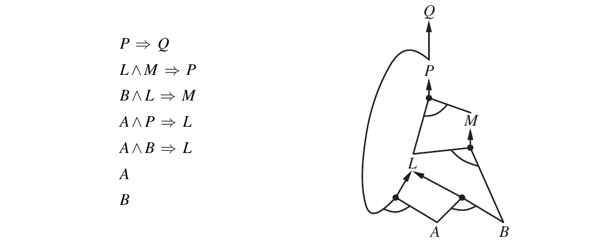
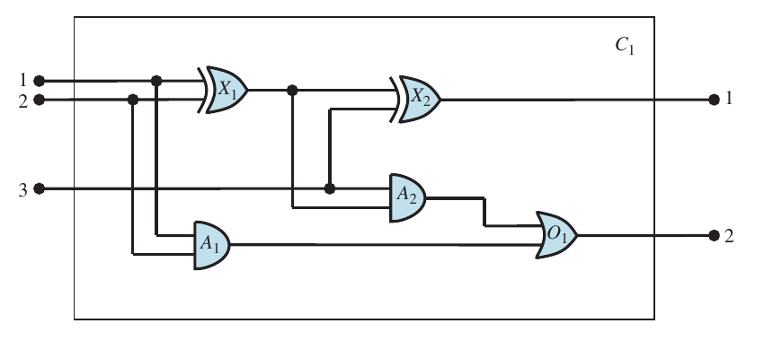

# La base de conocimiento es una lista de sentencias. No hace falta nada mas:
# TELL y ASK son dos funciones que la reciben.
def TELL(KB, sentencia):
"""Agrega `sentencia` a la base."""
# Una base de conocimiento es un *conjunto* de sentencias: decir dos
# veces lo mismo no agrega nada.
if sentencia not in KB:
KB.append(sentencia)
def ASK(KB, consulta):
"""Responde qué se sigue de lo que la base ya tiene."""
raise NotImplementedError # queda escrita en 1.7Agentes basados en conocimiento
Russell & Norvig, Artificial Intelligence: A Modern Approach, 4ª edición, capítulos 7 y 8.
“En el que diseñamos agentes capaces de formar representaciones de un mundo complejo, utilizar un proceso de inferencia para derivar nuevas representaciones sobre el mundo y emplear estas nuevas representaciones para deducir qué hacer.”
Parte 1 — Definiciones
En la unidad anterior se le daba al agente solo un problema para optimizar, tenía los estados, las acciones, los costos y el objetivo. “Sabía” cosas, pero de una forma muy limitada e inflexible.
En esta unidad se busca que el agente perciba una observación del mundo por vez y tenga que inferir el resto, en base a un conocimiento precargado.
1.1 — La base de conocimiento
El componente central de un agente basado en conocimiento es su base de conocimiento (knowledge base, KB), la cual consta de un conjunto de sentencias.
- Sentencia: cada una afirma algo sobre el mundo.
- Lenguaje de representación de conocimiento: el lenguaje en el que se escriben esas sentencias.
- Axioma: una sentencia que se toma como dada, que no se infiere de otras.
- Conocimiento de fondo (background knowledge): las sentencias de base del agente, antes de la primera percepción.
Además se definen dos operaciones: una para agregar sentencias y otra para consultar lo que se sabe.
TELL(KB, α) agrega la sentencia α a la base
ASK(KB, α) pregunta qué acción tomarLas dos involucran inferencia: derivar sentencias nuevas a partir de las ya conocidas.
Con esas dos operaciones ya se puede escribir el programa del agente. La idea es usar el mismo esqueleto para cualquier agente basado en conocimiento: recibe una percepción y devuelve una acción.
def make_percept_sentence(percept, t):
"""La sentencia "percibi `percept` en el instante `t`"."""
raise NotImplementedError
def make_action_query(t):
"""La consulta "¿que accion corresponde en el instante `t`?"."""
raise NotImplementedError
def make_action_sentence(action, t):
"""La sentencia "hice `action` en el instante `t`"."""
raise NotImplementedError
def kb_agent(percept, KB, t):
"""KB-AGENT(percept) retorna una acción."""
TELL(KB, make_percept_sentence(percept, t))
action = ASK(KB, make_action_query(t))
TELL(KB, make_action_sentence(action, t))
return actionCada vez que se lo llama hace tres cosas: le cuenta a la base lo que percibió, le pregunta qué acción conviene, y le cuenta que efectivamente la hizo.
Las tres funciones make_* son la interfaz entre los sensores y actuadores de un lado y la representación del otro: arman la sentencia que dice “percibí esto en el instante t”, la consulta “¿qué hago en el instante t?” y la sentencia “hice esta acción en el instante t”.
1.2 — Dos niveles de descripción
- Nivel de conocimiento: qué sabe el agente y cuáles son sus objetivos. Un taxi automático que tiene el objetivo de llevar un pasajero de San Francisco a Marin County, y que sabe que el Golden Gate es el único puente entre los dos lugares, va a cruzar el puente porque sabe que eso logra su objetivo. Para predecir su comportamiento no hizo falta hablar del programa.
- Nivel de implementación: cómo está hecho por dentro. Si el conocimiento geográfico está guardado como listas enlazadas, como mapas de píxeles o como señales propagándose por una red de neuronas es indistinto.
Y hay dos formas de construirlo.
- Enfoque declarativo: se arranca con la base vacía y el diseñador le va haciendo TELL de sentencias, una por una, hasta que el agente sepa operar en su entorno. Se le dice qué es verdad.
- Enfoque procedimental: los comportamientos deseados se escriben directamente como código. Se le dice cómo comportarse.
Hoy se entiende que un agente exitoso combina elementos de los ambos enfoques, y que el conocimiento declarativo muchas veces se puede compilar a código procedimental más eficiente.
Hay una tercera opción: darle al agente mecanismos para aprender por su cuenta, generando conocimiento general sobre el entorno a partir de una serie de percepciones. Un agente que aprende puede ser completamente autónomo.
1.3 — Sintaxis, semántica y modelos
Un lenguaje de representación se define por dos cosas.
Sintaxis: qué sentencias están bien formadas. Por ejemplo, en aritmética, la sintaxis es clara: x + y = 4 es una sentencia bien formada, x4y+ = no lo es.
Semántica: qué significan. Más precisamente, la semántica define la verdad de cada sentencia respecto de cada mundo posible. La semántica de la aritmética dice que x + y = 4 es verdadera en un mundo donde x vale 2 e y vale 2, y falsa en un mundo donde x vale 1 e y vale 1. En lógica estándar toda sentencia es verdadera o falsa.
En lugar de “mundo posible” se usa la palabra modelo. Un mundo posible se puede pensar como un entorno real en el que el agente puede estar o no; un modelo es una abstracción matemática que simplemente fija el valor de verdad de toda sentencia relevante. Si la sentencia α es verdadera en el modelo m, decimos que m satisface α, o que m es un modelo de α.
M(α) el conjunto de todos los modelos de α1.4 — Implicación lógica
Ahora que tenemos una noción de verdad podemos hablar de razonamiento. La relación clave es la implicación lógica (entailment): la idea de que una sentencia se sigue lógicamente de otra.
α ⊨ β la sentencia α implica la sentencia βLa definición formal es esta:
α ⊨ β si y solo si, en todo modelo en el que α es verdadera, β también es verdadera.
Escrita con los conjuntos de modelos:
α ⊨ β si y solo si M(α) ⊆ M(β)Veamos el mismo análisis en el mundo del wumpus, el entorno que nos va a acompañar todo el notebook: una cueva de 4×4 habitaciones, algunas con pozos, donde vale la regla de que hay brisa exactamente en las habitaciones vecinas a un pozo.
El agente arranca en [1,1], no percibe nada, y se mueve a [2,1], donde percibe brisa. Su KB son las reglas del mundo más esas dos percepciones. La pregunta es si hay pozo en [1,2], en [2,2] o en [3,1].
Tres habitaciones, cada una con pozo o sin pozo: 2³ = 8 modelos posibles. Los enumeramos todos y nos quedamos con los que satisfacen la KB.
# Un modelo le asigna un valor de verdad a cada simbolo. Aca los simbolos
# son "hay un pozo en tal habitacion", para las tres en cuestion.
habitaciones = ["[1,2]", "[2,2]", "[3,1]"]
# Un bucle por habitacion, con las dos opciones de cada una: 2 x 2 x 2 = 8.
modelos = []
for hay_pozo_en_1_2 in (False, True):
for hay_pozo_en_2_2 in (False, True):
for hay_pozo_en_3_1 in (False, True):
modelos.append({"[1,2]": hay_pozo_en_1_2,
"[2,2]": hay_pozo_en_2_2,
"[3,1]": hay_pozo_en_3_1})
modelos[{'[1,2]': False, '[2,2]': False, '[3,1]': False},
{'[1,2]': False, '[2,2]': False, '[3,1]': True},
{'[1,2]': False, '[2,2]': True, '[3,1]': False},
{'[1,2]': False, '[2,2]': True, '[3,1]': True},
{'[1,2]': True, '[2,2]': False, '[3,1]': False},
{'[1,2]': True, '[2,2]': False, '[3,1]': True},
{'[1,2]': True, '[2,2]': True, '[3,1]': False},
{'[1,2]': True, '[2,2]': True, '[3,1]': True}]def KB(m):
"""¿Es verdadera la base de conocimiento del agente en el modelo `m`?
Son las reglas del mundo junto con lo que el agente percibio. Las
habitaciones [1,1] y [2,1] estan visitadas, asi que ya se sabe que no
tienen pozo.
"""
# No hay brisa en [1,1]: ninguna vecina de [1,1] tiene pozo. La unica
# vecina en duda es [1,2].
sin_brisa_en_1_1 = not m["[1,2]"]
# Hay brisa en [2,1]: alguna vecina de [2,1] tiene pozo. Las vecinas en
# duda son [2,2] y [3,1].
brisa_en_2_1 = m["[2,2]"] or m["[3,1]"]
return sin_brisa_en_1_1 and brisa_en_2_1
modelos_kb = [m for m in modelos if KB(m)]
modelos_kb[{'[1,2]': False, '[2,2]': False, '[3,1]': True},
{'[1,2]': False, '[2,2]': True, '[3,1]': False},
{'[1,2]': False, '[2,2]': True, '[3,1]': True}]
print("".join(f"{h:>8}" for h in habitaciones), " KB")
for m in modelos:
fila = "".join(f"{'pozo' if m[h] else '-':>8}" for h in habitaciones)
print(fila, " *" if KB(m) else "") [1,2] [2,2] [3,1] KB
- - -
- - pozo *
- pozo - *
- pozo pozo *
pozo - -
pozo - pozo
pozo pozo -
pozo pozo pozo De los ocho modelos, la KB es verdadera en tres. Sobre esos tres preguntamos por dos conclusiones posibles:
α1 = "no hay pozo en [1,2]"
α2 = "no hay pozo en [2,2]"def alfa_1(m):
return not m["[1,2]"]
def alfa_2(m):
return not m["[2,2]"]
# α se sigue de la KB si es verdadera en TODO modelo donde la KB lo es.
print("KB ⊨ α1:", all(alfa_1(m) for m in modelos_kb))
print("KB ⊨ α2:", all(alfa_2(m) for m in modelos_kb))KB ⊨ α1: True
KB ⊨ α2: False1,2
2,2
3,2
1,1Vsin brisa
2,1Abrisa
3,1
1,2
2,2
3,2
1,1Vsin brisa
2,1Abrisa
3,1POZO
1,2
2,2POZO
3,2
1,1Vsin brisa
2,1Abrisa
3,1
1,2
2,2POZO
3,2
1,1Vsin brisa
2,1Abrisa
3,1POZO
1,2POZO
2,2
3,2
1,1Vsin brisa
2,1Abrisa
3,1
1,2POZO
2,2
3,2
1,1Vsin brisa
2,1Abrisa
3,1POZO
1,2POZO
2,2POZO
3,2
1,1Vsin brisa
2,1Abrisa
3,1
1,2POZO
2,2POZO
3,2
1,1Vsin brisa
2,1Abrisa
3,1POZO
Los 8 modelos posibles. En 3 de ellos KB es verdadera: son los resaltados. α1 es verdadera en los 3, así que KB ⊨ α1. α2 es verdadera en 1 de esos 3 y falsa en el resto, así que KB ⊭ α2.
En los tres modelos donde la KB es verdadera, α1 también lo es: KB ⊨ α1, el agente puede concluir que en [1,2] no hay pozo. En cambio α2 es falsa en alguno de esos tres, así que KB ⊭ α2. ¿Qué significa exactamente eso?
El algoritmo que acabamos de correr —enumerar todos los modelos y verificar que α es verdadera en todos aquellos donde la KB lo es— se llama verificación de modelos (model checking), y es una forma de hacer inferencia lógica: derivar conclusiones a partir de la definición de implicación.
Si un algoritmo de inferencia i puede derivar α a partir de la KB, se escribe:
KB ⊢i α "α se deriva de KB por i"La imagen del libro para separar las dos ideas: si el conjunto de todas las consecuencias de la KB es un pajar y α es una aguja, la implicación es que la aguja esté en el pajar, y la inferencia es encontrarla.
1.5 — Solidez y completitud
Las siguientes propiedades son deseables en un algoritmo de inferencia:
- Solidez (soundness), o que preserve la verdad: deriva únicamente sentencias implicadas. Un procedimiento no sólido inventa hechos: anuncia el hallazgo de agujas que no estaban en el pajar. La verificación de modelos, cuando se puede aplicar, es sólida.
- Completitud (completeness): puede derivar toda sentencia implicada. Si la aguja está en el pajar, la encuentra.
1.6 — Lógica proposicional
Lo visto hasta ahora puede aplicarse a cualquier esquema de lógica. Ahora tomamos un caso particular: la lógica proposicional.
1.6.1 — Sintaxis
Las sentencias atómicas constan de un solo símbolo proposicional, que representa una proposición que puede ser verdadera o falsa. Ej: P, Q, R, W1,3, FacingEast.
Las sentencias complejas se construyen a partir de sentencias más simples usando conectivos lógicos. Son cinco:
| conectivo | ejemplo | en SymPy | |
|---|---|---|---|
¬ |
negación (not) | ¬W1,3 |
Not(W13) |
∧ |
conjunción (and) | W1,3 ∧ P3,1 |
And(W13, P31) |
∨ |
disyunción (or) | (W1,3 ∧ P3,1) ∨ W2,2 |
Or(And(W13, P31), W22) |
⇒ |
implicación (implies) | (W1,3 ∧ P3,1) ⇒ ¬W2,2 |
Implies(And(W13, P31), Not(W22)) |
⇔ |
bicondicional (if and only if) | W1,3 ⇔ ¬W2,2 |
Equivalent(W13, Not(W22)) |
1.6.2 — Semántica
La semántica define cómo determinar el valor de verdad de una sentencia respecto de un modelo. En lógica proposicional un modelo es simplemente una asignación de un valor de verdad —verdadero o falso— a cada símbolo proposicional. Si las sentencias de la base usan los símbolos P1,2, P2,2 y P3,1, un modelo posible es:
m1 = {P1,2 = falso, P2,2 = falso, P3,1 = verdadero}Con tres símbolos hay 2³ = 8 modelos posibles, con n símbolos hay 2ⁿ.
Entonces, para las sentencias complejas hay cinco reglas, una por conectivo, que valen para cualesquiera subsentencias P y Q en cualquier modelo m:
¬Pes verdadera si y solo siPes falsa en m.P ∧ Qes verdadera si y solo siPyQson las dos verdaderas en m.P ∨ Qes verdadera si y solo siPoQes verdadera en m.P ⇒ Qes verdadera salvo quePsea verdadera yQfalsa en m.P ⇔ Qes verdadera si y solo siPyQson las dos verdaderas o las dos falsas en m.
En SymPy
Las sentencias las vamos a escribir con SymPy, que trae exactamente esto: símbolos, los cinco conectivos y un motor para consultar. Con tres ideas alcanza para leer todo el código que sigue.
Un símbolo proposicional es un Symbol. Se crea con su nombre, Symbol("P1,2"), o varios de una vez, P, Q = symbols("P Q"). El nombre es un texto cualquiera —la coma de P1,2 no significa nada— y crear el símbolo no afirma nada: Enciende existe, pero nadie dijo todavía que la computadora encienda.
Una sentencia se arma con las funciones de la tabla, And(P, Q), Implies(P, Q), etc., o con operadores de Python que dan el mismo objeto:
¬P ~P P ∧ Q P & Q
P ∨ Q P | Q P ⇒ Q P >> Q⇔ no tiene operador: siempre es Equivalent(P, Q). print() muestra la sentencia con los operadores; para verla con los símbolos del libro hay que pedírselo, como se hace en la celda de abajo.
Una sentencia no tiene valor de verdad. And(P, Q) no es True ni False: es una expresión que espera un modelo. Recién cuando se le da un valor a cada símbolo —con .subs, o adentro de satisfiable— hay algo que evaluar.
Y tres cosas que SymPy hace por su cuenta y conviene saber desde ahora: reordena los argumentos (Or(Q, P) se guarda como P ∨ Q), simplifica al construir (And(P, P) queda en P, Implies(P, P) en True) y escribe → donde el libro escribe ⇒.
Con SymPy los cinco se escriben así:
from sympy import (And, Equivalent, Implies, Not, Or, Symbol, Xor, init_printing,
pretty, symbols, to_cnf)
from sympy.logic.boolalg import truth_table
from sympy.logic.inference import satisfiable, valid
init_printing(use_unicode=True, use_latex=False)
def escribir(s):
"""Imprime la sentencia `s`, para cuando no es lo ultimo de la celda."""
print(pretty(s, use_unicode=True))
P, Q = symbols("P Q")
[Not(P), And(P, Q), Or(P, Q), Implies(P, Q), Equivalent(P, Q)][¬P, P ∧ Q, P ∨ Q, P → Q, P ⇔ Q]Las reglas se pueden expresar también como tablas de verdad, que dan el valor de la sentencia compleja para cada asignación posible a sus partes. Es la figura 7.8 del libro:
conectivos = [("¬P", Not(P)), ("P∧Q", And(P, Q)), ("P∨Q", Or(P, Q)),
("P⇒Q", Implies(P, Q)), ("P⇔Q", Equivalent(P, Q))]
print(f"{'P':>7}{'Q':>7}" + "".join(f"{nombre:>7}" for nombre, _ in conectivos))
# Dos simbolos, dos bucles: las cuatro asignaciones posibles, como en 1.4.
for valor_P in (False, True):
for valor_Q in (False, True):
modelo = {P: valor_P, Q: valor_Q}
# `subs` reemplaza cada simbolo por su valor de verdad y evalua.
fila = [valor_P, valor_Q] + [bool(s.subs(modelo)) for _, s in conectivos]
print("".join(f"{str(v).lower():>7}" for v in fila)) P Q ¬P P∧Q P∨Q P⇒Q P⇔Q
false false true false false true true
false true true false true true false
true false false false true false false
true true false true true true true1.6.3 — Escribiendo la base de conocimiento
Con esto ya podemos escribir en el lenguaje la KB que en 1.4 habíamos escrito como una función de Python. Para cada habitación [x,y] del mundo del wumpus necesitamos estos símbolos:
Px,y es verdadero si hay un pozo en [x,y]
Wx,y es verdadero si hay un wumpus en [x,y]
Bx,y es verdadero si hay brisa en [x,y]
Sx,y es verdadero si hay hedor en [x,y]
Lx,y es verdadero si el agente está en [x,y]Y las sentencias:
R1: ¬P1,1
R2: B1,1 ⇔ (P1,2 ∨ P2,1)
R3: B2,1 ⇔ (P1,1 ∨ P2,2 ∨ P3,1)
R4: ¬B1,1
R5: B2,1R1, R2 y R3 son verdaderas en todos los mundos del wumpus: son los axiomas del mundo, el conocimiento de fondo del agente.
R4 y R5 son de esta interacción en particular que ingresaron a la KB por TELL.
# Un simbolo proposicional es un Symbol de SymPy. El nombre es literal: la
# coma de "P1,2" es parte del nombre, no un operador.
B11, B21 = Symbol("B1,1"), Symbol("B2,1")
P11, P12, P21, P22, P31 = (Symbol("P1,1"), Symbol("P1,2"), Symbol("P2,1"),
Symbol("P2,2"), Symbol("P3,1"))
R1 = Not(P11)
R2 = Equivalent(B11, Or(P12, P21))
R3 = Equivalent(B21, Or(P11, P22, P31))
R4 = Not(B11)
R5 = B21
# La base: el conocimiento de fondo primero, las percepciones despues.
kb = []
for sentencia in (R1, R2, R3, R4, R5):
TELL(kb, sentencia)
for nombre, sentencia in zip(["R1", "R2", "R3", "R4", "R5"], kb):
print(f"{nombre}: {pretty(sentencia, use_unicode=True)}")R1: ¬P1,1
R2: B1,1 ⇔ (P1,2 ∨ P2,1)
R3: B2,1 ⇔ (P1,1 ∨ P2,2 ∨ P3,1)
R4: ¬B1,1
R5: B2,11.7 — Propiedades y reglas de inferencia
Veamos las siguientes cuatro propiedades que se apoyan en la implicación.
Equivalencia lógica: dos sentencias α y β son lógicamente equivalentes si son verdaderas en el mismo conjunto de modelos. Se escribe α ≡ β, y equivale a decir que cada una implica a la otra: α ≡ β si y solo si α ⊨ β y β ⊨ α. Algunas equivalencias lógicas son:
¬(¬α) ≡ α doble negación
(α ⇒ β) ≡ (¬β ⇒ ¬α) contraposición
(α ⇒ β) ≡ (¬α ∨ β) eliminación de la implicación
(α ⇔ β) ≡ ((α ⇒ β) ∧ (β ⇒ α)) eliminación del bicondicional
¬(α ∧ β) ≡ (¬α ∨ ¬β) De Morgan
¬(α ∨ β) ≡ (¬α ∧ ¬β) De Morgan
(α ∧ (β ∨ γ)) ≡ ((α ∧ β) ∨ (α ∧ γ)) distributividad de ∧ sobre ∨
(α ∨ (β ∧ γ)) ≡ ((α ∨ β) ∧ (α ∨ γ)) distributividad de ∨ sobre ∧Dos sentencias son equivalentes cuando el bicondicional entre ellas es verdadero en todo modelo, y eso es justo lo que contesta valid:
alfa, beta, gamma = symbols("α β γ")
equivalencias = [
("doble negación", Not(Not(alfa)), alfa),
("contraposición", Implies(alfa, beta), Implies(Not(beta), Not(alfa))),
("elim. implicación", Implies(alfa, beta), Or(Not(alfa), beta)),
("elim. bicondicional", Equivalent(alfa, beta), And(Implies(alfa, beta),
Implies(beta, alfa))),
("De Morgan", Not(And(alfa, beta)), Or(Not(alfa), Not(beta))),
("distributividad", And(alfa, Or(beta, gamma)), Or(And(alfa, beta),
And(alfa, gamma))),
]
for nombre, izq, der in equivalencias:
print(f"{nombre:>20}:", valid(Equivalent(izq, der))) doble negación: True
contraposición: True
elim. implicación: True
elim. bicondicional: True
De Morgan: True
distributividad: TrueValidez: una sentencia es válida si es verdadera en todos los modelos. P ∨ ¬P es válida. También se las llama tautologías: son necesariamente verdaderas. De acá sale el teorema de deducción:
para cualesquiera α y β,
α ⊨ βsi y solo si la sentencia(α ⇒ β)es válida.
print("¿P ∨ ¬P es válida?", valid(Or(P, Not(P))))
print("¿P ⇒ Q es válida? ", valid(Implies(P, Q)))
# La base entera es una sola sentencia: la conjuncion de sus partes.
base = And(*kb)
# Teorema de deduccion: KB ⊨ ¬P1,2 si y solo si (KB ⇒ ¬P1,2) es valida.
print("¿(KB ⇒ ¬P1,2) es válida?", valid(Implies(base, Not(P12))))¿P ∨ ¬P es válida? True
¿P ⇒ Q es válida? False
¿(KB ⇒ ¬P1,2) es válida? TrueSatisfacibilidad: una sentencia es satisfacible si es verdadera en algún modelo. La KB de 1.4 es satisfacible: hay tres modelos que la satisfacen. La validez y satisfacibilidad están conectadas: α es válida si y solo si ¬α es insatisfacible. Y de ahí sale el resultado que vamos a usar para hacer inferencia:
α ⊨ βsi y solo si la sentencia(α ∧ ¬β)es insatisfacible.
Probar β a partir de α mostrando que (α ∧ ¬β) es insatisfacible es exactamente la técnica del reductio ad absurdum: se supone que β es falsa y se muestra que eso lleva a una contradicción. También se la llama prueba por refutación o por contradicción.
EJ: Si llueve entonces la calle está mojada (L→M)∧L ⊨ M α∧¬β -> [(L→M)∧L]∧¬M
satisfiable es la función de SymPy que resuelve esto. Devuelve un modelo —un diccionario que le da un valor de verdad a cada símbolo— o False si no existe ninguno. Es importante: lo que devuelve no es “sí/no” a nuestra pregunta, es un ejemplo o la ausencia de ejemplos.
# Un modelo donde la base es verdadera: uno de los tres de la figura 7.9.
print("un modelo de la KB:", satisfiable(base))
# Los tres, contados: la verificacion de modelos de 1.4, ahora sobre la
# sentencia y no sobre una funcion escrita a mano.
simbolos = sorted(base.free_symbols, key=str)
filas = list(truth_table(base, simbolos))
print(f"\nsímbolos: {len(simbolos)} → filas: {len(filas)}")
print("modelos donde la KB es verdadera:", sum(1 for _, valor in filas if valor))
# Refutacion: si no hay ningun modelo donde la KB valga y ¬P1,2 no, entonces
# la KB implica ¬P1,2. Ojo con el `is False`: satisfiable devuelve un modelo.
print("\ncontraejemplo a ¬P1,2:", satisfiable(And(base, P12)))
print("contraejemplo a ¬P2,2:", satisfiable(And(base, P22)))un modelo de la KB: {B2,1: True, P3,1: True, P1,2: False, P2,1: False, P2,2: False, P1,1: False, B1,1: False}
símbolos: 7 → filas: 128
modelos donde la KB es verdadera: 3
contraejemplo a ¬P1,2: False
contraejemplo a ¬P2,2: {P2,2: True, B2,1: True, P1,2: False, P2,1: False, P1,1: False, P3,1: False, B1,1: False}Para ¬P1,2 no hay contraejemplo, así que se sigue de la base. Para ¬P2,2 hay uno, así que no se sigue. Pero eso no quiere decir que la base pruebe lo contrario: puede que tampoco pruebe P2,2. Son tres respuestas posibles, no dos, y hay una cuarta si la base se contradice a sí misma.
Con eso ya se puede escribir el ASK que quedó pendiente en 1.1.
def consultar(base, proposicion):
"""Las cuatro respuestas posibles a "¿que dice `base` sobre `proposicion`?"."""
# Si no existe ningun modelo, la base se contradice: de una contradiccion
# se sigue cualquier cosa, asi que no hay nada que contestar.
if satisfiable(base) is False:
return "Base inconsistente"
# Si su negacion es imposible, la proposicion esta demostrada.
if satisfiable(And(base, Not(proposicion))) is False:
return "Verdadero"
# Si la proposicion es imposible, su negacion esta demostrada.
if satisfiable(And(base, proposicion)) is False:
return "Falso"
# Quedan modelos donde es verdadera y otros donde es falsa.
return "Desconocido"
def ASK(KB, consulta):
"""Responde qué se sigue de lo que la base ya tiene."""
return consultar(And(*KB), consulta)for consulta in (Not(P12), Not(P22), P22, B21):
print(f"{pretty(consulta, use_unicode=True):>6} → {ASK(kb, consulta)}") ¬P1,2 → Verdadero
¬P2,2 → Desconocido
P2,2 → Desconocido
B2,1 → VerdaderoLos mismos dos resultados de 1.4, y ahora con nombre: ¬P1,2 está demostrado, ¬P2,2 no, y P2,2 tampoco. La respuesta a las dos últimas es la misma —desconocido— porque la información que hay no alcanza para decidir.
ImportanteNo saber no es saber que no
La lógica que usamos sigue siendo bivalente: en cada modelo, P2,2 es verdadera o falsa. “Desconocido” no describe al mundo sino a nuestra información: hay modelos compatibles con la base donde hay pozo en [2,2] y otros donde no. Es la diferencia entre no saber y saber que no.
B2,1 da verdadero por una razón distinta a las demás: no se dedujo de nada, está en la base porque el agente lo percibió. ASK no distingue entre lo que se dijo y lo que se derivó, y no tiene por qué hacerlo.
Monotonicidad: el conjunto de sentencias implicadas solo puede crecer a medida que se agrega información a la base.
si KB ⊨ α entonces KB ∧ β ⊨ αAgregar β puede permitir sacar conclusiones nuevas, pero no puede invalidar ninguna conclusión α que ya se había sacado.
# Una percepcion mas: tampoco hay brisa en [1,2], asi que ninguna de sus
# vecinas tiene pozo. Con eso [2,2] queda limpia y el pozo tiene que estar
# en [3,1] -- la inferencia de la figura 7.4 del libro.
TELL(kb, Equivalent(Symbol("B1,2"), Or(P11, P22, Symbol("P1,3"))))
TELL(kb, Not(Symbol("B1,2")))
print("¬P1,2:", ASK(kb, Not(P12)), " ← lo que ya se sabía, sigue valiendo")
print("¬P2,2:", ASK(kb, Not(P22)), " ← antes era desconocido")
print(" P3,1:", ASK(kb, P31), " ← y ahora se sabe dónde está el pozo")¬P1,2: Verdadero ← lo que ya se sabía, sigue valiendo
¬P2,2: Verdadero ← antes era desconocido
P3,1: Verdadero ← y ahora se sabe dónde está el pozoNinguna conclusión anterior se dio vuelta: ¬P1,2 sigue demostrada. Las dos que estaban en desconocido se resolvieron. Eso es la monotonicidad, y es lo que le permite al agente ir acumulando percepciones sin tener que revisar nunca nada de lo que ya concluyó.
1.7.1 — Pruebas
Para no enumerar todos los modelos posibles se aplican reglas de inferencia directamente a las sentencias de la base, encadenándolas para construir una prueba.
Una regla muy conocida es Modus Ponens: dadas una implicación y su premisa, se puede inferir la conclusión.
α ⇒ β, α
───────────
βOtra es la eliminación de la conjunción: de una conjunción se puede inferir cualquiera de sus partes.
α ∧ β
──────
αCada una de las equivalencias lógicas de más arriba también sirve como regla de inferencia. Y buscar una prueba es, otra vez, un problema de búsqueda como los de la unidad 1, así que cualquiera de aquellos algoritmos sirve para encontrarla:
- INITIAL: la base de conocimiento inicial.
- ACTIONS: todas las reglas de inferencia aplicables a las sentencias que hay.
- RESULT: agregar a la base la sentencia de abajo de la regla aplicada.
- GOAL: un estado que contenga la sentencia que se quiere probar.
Ésta es la prueba de ¬P1,2 que hace el libro en 7.5.1, paso por paso. Enumerar modelos no aparece por ningún lado: cada línea sale de aplicarle una regla a las anteriores, y sólo se tocan las sentencias que hacen falta.
pasos = [
("R2", R2, "el axioma de la brisa en [1,1]"),
("R6", And(Implies(B11, Or(P12, P21)),
Implies(Or(P12, P21), B11)), "eliminación del bicondicional"),
("R7", Implies(Or(P12, P21), B11), "eliminación de la conjunción"),
("R8", Implies(Not(B11), Not(Or(P12, P21))), "contraposición"),
("R9", Not(Or(P12, P21)), "Modus Ponens con R4 (¬B1,1)"),
("R10", And(Not(P12), Not(P21)), "De Morgan"),
]
for nombre, sentencia, regla in pasos:
# Cada paso tiene que seguirse de la base: si no, la regla estaria mal
# aplicada. Es la solidez, comprobada linea por linea.
print(f"{nombre:>4}: {pretty(sentencia, use_unicode=True):<42} {regla}")
print(f" {ASK(kb, sentencia)}") R2: B1,1 ⇔ (P1,2 ∨ P2,1) el axioma de la brisa en [1,1]
Verdadero
R6: (B1,1 → (P1,2 ∨ P2,1)) ∧ ((P1,2 ∨ P2,1) → B1,1) eliminación del bicondicional
Verdadero
R7: (P1,2 ∨ P2,1) → B1,1 eliminación de la conjunción
Verdadero
R8: ¬B1,1 → ¬(P1,2 ∨ P2,1) contraposición
Verdadero
R9: ¬(P1,2 ∨ P2,1) Modus Ponens con R4 (¬B1,1)
Verdadero
R10: ¬P1,2 ∧ ¬P2,1 De Morgan
VerdaderoLos seis pasos se siguen de la base, así que la prueba es sólida: cada regla, bien aplicada, produce una sentencia implicada. Y fijate cuántas sentencias tocó: R2 y R4, nada más. R1, R3 y R5 hablan de otros símbolos y no hicieron falta. Aunque la base tuviera un millón de sentencias más, la prueba sería la misma —mientras que enumerar modelos se ahogaría en la explosión exponencial—.
Las reglas de esta sección son sólidas, pero un conjunto de reglas puede ser incompleto: si sacáramos, por ejemplo, la eliminación del bicondicional, hay pruebas que dejarían de existir. Existe una única regla de inferencia, la resolución, que acoplada a cualquier algoritmo de búsqueda completo da un procedimiento de inferencia completo. Para aplicarla hace falta escribir las sentencias de una forma particular —la misma, dicho sea de paso, que le pide por dentro el algoritmo de satisfiable—.
1.8 — Cláusulas, FNC y cláusulas de Horn
La regla de resolución se aplica solo a cláusulas: disyunciones de literales, como (P1,1 ∨ P3,1).
Toda sentencia de la lógica proposicional es lógicamente equivalente a una conjunción de cláusulas. Una sentencia escrita de esa forma está en forma normal conjuntiva (FNC, o CNF). El procedimiento para convertirla usa las equivalencias de 1.7. Por ejemplo, aplicado sobre R2:
R2: B1,1 ⇔ (P1,2 ∨ P2,1)
1. eliminar ⇔ (B1,1 ⇒ (P1,2 ∨ P2,1)) ∧ ((P1,2 ∨ P2,1) ⇒ B1,1)
2. eliminar ⇒ (¬B1,1 ∨ P1,2 ∨ P2,1) ∧ (¬(P1,2 ∨ P2,1) ∨ B1,1)
3. ¬ hacia adentro (¬B1,1 ∨ P1,2 ∨ P2,1) ∧ ((¬P1,2 ∧ ¬P2,1) ∨ B1,1)
4. distribuir ∨ (¬B1,1 ∨ P1,2 ∨ P2,1) ∧ (¬P1,2 ∨ B1,1) ∧ (¬P2,1 ∨ B1,1)La sentencia original quedó como una conjunción de tres cláusulas.
Dentro de las cláusulas hay dos familias restringidas que habilitan métodos de inferencia más eficientes:
Cláusula definida: una disyunción de literales de los cuales exactamente uno es positivo.
(¬L1,1 ∨ ¬Breeze ∨ B1,1)es una cláusula definida;(¬B1,1 ∨ P1,2 ∨ P2,1)no lo es, porque tiene dos positivos.Cláusula de Horn: una disyunción de literales de los cuales a lo sumo uno es positivo. Toda cláusula definida es de Horn. Las que no tienen ningún literal positivo se llaman cláusulas objetivo. Las cláusulas de Horn son cerradas bajo resolución: al resolver dos cláusulas de Horn se obtiene otra cláusula de Horn.
Las bases formadas solo por cláusulas definidas son interesantes por tres razones.
1. Toda cláusula definida se puede escribir como una implicación cuya premisa es una conjunción de literales positivos y cuya conclusión es un único literal positivo. La cláusula de recién se escribe:
(¬L1,1 ∨ ¬Breeze ∨ B1,1) ≡ (L1,1 ∧ Breeze) ⇒ B1,1y así se lee mucho mejor: si el agente está en [1,1] y percibe brisa, entonces hay brisa en [1,1]. En forma de Horn, la premisa se llama cuerpo y la conclusión, cabeza. Una sentencia formada por un único literal positivo, como L1,1, se llama hecho: también se puede escribir en forma de implicación, como True ⇒ L1,1, pero es más simple escribir directamente L1,1.
2. La inferencia con cláusulas de Horn se puede hacer con los algoritmos de encadenamiento hacia adelante (forward chaining) y hacia atrás (backward chaining). Los dos son naturales: los pasos son obvios y fáciles de seguir para una persona, a diferencia de lo que pasa con la resolución. Este tipo de inferencia es la base de la programación lógica.
3. Decidir la implicación con cláusulas de Horn lleva un tiempo lineal en el tamaño de la base de conocimiento.
# El procedimiento de arriba, hecho por SymPy.
escribir(to_cnf(R2))
def positivos(clausula):
"""Los literales positivos de una clausula: los que no estan negados."""
literales = clausula.args if clausula.func == Or else (clausula,)
return [l for l in literales if l.is_Symbol]
print()
for clausula in to_cnf(R2).args:
cuantos = len(positivos(clausula))
familia = ("definida" if cuantos == 1 else
"de Horn" if cuantos == 0 else "ni definida ni de Horn")
print(f"{pretty(clausula, use_unicode=True):<24} {cuantos} positivo(s) {familia}")(B1,1 ∨ ¬P1,2) ∧ (B1,1 ∨ ¬P2,1) ∧ (P1,2 ∨ P2,1 ∨ ¬B1,1)
B1,1 ∨ ¬P1,2 1 positivo(s) definida
B1,1 ∨ ¬P2,1 1 positivo(s) definida
P1,2 ∨ P2,1 ∨ ¬B1,1 2 positivo(s) ni definida ni de HornLas tres cláusulas que da to_cnf son las mismas cuatro líneas de arriba, resueltas de una. Y la primera de las tres, (¬B1,1 ∨ P1,2 ∨ P2,1), tiene dos literales positivos: no es una cláusula definida ni de Horn.
Eso importa para lo que viene. Los dos algoritmos de la Parte 2 son mucho más baratos que enumerar modelos, pero solo funcionan sobre bases de cláusulas definidas, y el axioma central del mundo del wumpus no lo es.
Parte 2 — Encadenamiento hacia adelante y hacia atrás
En 1.8 quedó dicho que las bases formadas por cláusulas definidas se pueden tratar con dos algoritmos que no enumeran modelos ni convierten nada a FNC: el encadenamiento hacia adelante y el encadenamiento hacia atrás. Los dos son sólidos y completos para ese tipo de base.
Son los únicos algoritmos del capítulo que escribimos a mano. consultar va a seguir estando para comparar contra ellos.
2.1 — Una base de cláusulas definidas
Una cláusula definida tiene exactamente un literal positivo, así que siempre se puede escribir como una implicación: el cuerpo es una conjunción de símbolos y la cabeza es un símbolo solo. Escrita así, Implies(And(L, M), P) ya tiene las dos partes adentro; solo hacen falta dos funciones para sacarlas. Un hecho es una cláusula sin cuerpo: True ⇒ A se escribe A.
def cuerpo(clausula):
"""Los simbolos que se conjugan en la premisa. Un hecho no tiene cuerpo."""
if clausula.is_Symbol:
return ()
premisa = clausula.args[0]
# La premisa puede ser una conjuncion de varios simbolos o uno solo.
return premisa.args if premisa.func == And else (premisa,)
def cabeza(clausula):
"""El unico simbolo positivo: la conclusion."""
return clausula if clausula.is_Symbol else clausula.args[1]La base con la que vamos a trabajar es la del libro. Son cinco reglas y dos hechos, y la consulta va a ser el símbolo Q.
A, B, L, M = symbols("A B L M")
clausulas = [
Implies(P, Q),
Implies(And(L, M), P),
Implies(And(B, L), M),
Implies(And(A, P), L),
Implies(And(A, B), L),
A,
B,
]
for c in clausulas:
print(f"{pretty(c, use_unicode=True):<14} cuerpo {cuerpo(c)} cabeza {cabeza(c)}")P → Q cuerpo (P,) cabeza Q
(L ∧ M) → P cuerpo (L, M) cabeza P
(B ∧ L) → M cuerpo (B, L) cabeza M
(A ∧ P) → L cuerpo (A, P) cabeza L
(A ∧ B) → L cuerpo (A, B) cabeza L
A cuerpo () cabeza A
B cuerpo () cabeza BEsta base también se puede dibujar como un grafo AND–OR. Cada símbolo es un nodo y cada cláusula, una arista que va del cuerpo a la cabeza:
- varias aristas unidas por un arco son una conjunción: hay que probar todas. Es lo que pasa con
LyMpara llegar aP. - varias aristas sin arco son una disyunción: alcanza con probar alguna. Es lo que pasa con
L, al que se llega por dos cláusulas distintas.

2.2 — Encadenamiento hacia adelante
Arranca de los hechos —los literales positivos que ya están en la base— y propaga hacia arriba. Si se conocen todas las premisas de una implicación, se agrega su conclusión al conjunto de hechos conocidos. Sigue hasta que aparece la consulta o hasta que no se puede inferir nada más.
Lo que hace que corra en tiempo lineal es la tabla count: para cada cláusula guarda cuántos símbolos de su cuerpo faltan probar. Cada vez que se procesa un símbolo nuevo se les resta uno a las cláusulas donde aparece, y cuando un contador llega a cero, esa cláusula ya se puede disparar. Así nunca hay que revisar una cláusula entera de nuevo.
from collections import deque
def pl_fc_entails(KB, q):
"""PL-FC-ENTAILS?(KB, q) returns true or false.
`KB` es una lista de clausulas definidas y `q` un simbolo.
"""
# Cuantos simbolos del cuerpo de cada clausula faltan probar.
count = {c: len(cuerpo(c)) for c in KB}
# Que simbolos ya se procesaron, para no repetir trabajo ni entrar en
# bucle con cosas como P ⇒ Q y Q ⇒ P.
inferred = {}
# Los simbolos que se saben verdaderos pero todavia no se procesaron:
# al principio, los hechos.
queue = deque(cabeza(c) for c in KB if not cuerpo(c))
while queue:
p = queue.popleft()
if p == q:
return True
if not inferred.get(p, False):
inferred[p] = True
for c in KB:
if p in cuerpo(c):
count[c] -= 1
if count[c] == 0:
queue.append(cabeza(c))
return FalseZ = Symbol("Z")
print("¿la base implica Q?", pl_fc_entails(clausulas, Q))
print("¿la base implica Z?", pl_fc_entails(clausulas, Z))
# Lo mismo preguntado con `consultar`, que no sabe de clausulas definidas y
# enumera modelos. Las dos primeras respuestas coinciden; la tercera no.
print()
print("consultar Q:", consultar(And(*clausulas), Q))
print("consultar Z:", consultar(And(*clausulas), Z))¿la base implica Q? True
¿la base implica Z? False
consultar Q: Verdadero
consultar Z: Desconocidopl_fc_entails contesta False para Z, y consultar contesta desconocido. No se contradicen: el algoritmo responde “no pude probarlo”, que es una pregunta distinta de “¿es falso?”. Z no aparece en ninguna cláusula, así que hay modelos de la base donde es verdadera y otros donde es falsa.
El precio de esa distinción es el que ya vimos: consultar enumera modelos y el encadenamiento no.
Paso a paso, para ver los contadores bajando:
hechos conocidos: A, B
saco A
(A ∧ P) → L le faltan 1
(A ∧ B) → L le faltan 1
saco B
(B ∧ L) → M le faltan 1
(A ∧ B) → L le faltan 0 → L
saco L
(L ∧ M) → P le faltan 1
(B ∧ L) → M le faltan 0 → M
saco M
(L ∧ M) → P le faltan 0 → P
saco P
P → Q le faltan 0 → Q
(A ∧ P) → L le faltan 0 → L
saco Q es la consultaEl algoritmo es sólido: cada paso es una aplicación de Modus Ponens. Y es completo: toda sentencia atómica implicada por la base se deriva. La forma de verlo es mirar el estado final de la tabla inferred, cuando ya no se puede inferir nada más. Esa tabla, leída como un modelo —verdadero para cada símbolo inferido, falso para todos los demás—, es un modelo de la base: si alguna cláusula a1 ∧ ... ∧ ak ⇒ b fuera falsa en él, su cuerpo sería verdadero y su cabeza falsa, y entonces el algoritmo no habría terminado. Como toda sentencia implicada es verdadera en todos los modelos de la base, y en particular en este, toda sentencia implicada termina inferida.
El encadenamiento hacia adelante es un ejemplo de razonamiento dirigido por los datos (data-driven): el foco arranca en lo que se sabe. Un agente puede usarlo sin tener ninguna consulta en mente, para ir procesando las percepciones a medida que llegan. El riesgo es el mismo que en las personas: de cada dato nuevo se siguen infinitas consecuencias irrelevantes, y hay que mantener el proceso bajo control para no ahogarse en ellas.
2.3 — Encadenamiento hacia atrás
Va al revés: arranca en la consulta. Si q ya se sabe verdadero, no hay nada que hacer. Si no, busca en la base las implicaciones cuya conclusión sea q, y para cada una intenta probar todas sus premisas, otra vez hacia atrás. Baja por el grafo hasta llegar a hechos conocidos.
Las dos condiciones de corte importan. Si un subobjetivo ya está en la cadena de objetivos que se están intentando probar más arriba, hay un ciclo y esa rama se abandona. Y para no repetir trabajo, conviene recordar los subobjetivos que ya se probaron y los que ya fallaron; la versión de acá no lo hace, y en la traza se va a ver el costo.
def pl_bc_entails(KB, q, objetivos=()):
"""¿Se sigue el simbolo `q` de KB? Trabaja hacia atras, desde la consulta.
`objetivos` son los simbolos que se estan intentando probar mas arriba en
la cadena: si `q` vuelve a aparecer ahi, es un ciclo.
"""
if q in objetivos:
return False
for c in KB:
if cabeza(c) == q:
# Un hecho tiene el cuerpo vacio, y all([]) es True.
if all(pl_bc_entails(KB, p, objetivos + (q,)) for p in cuerpo(c)):
return True
return Falseprint("¿la base implica Q?", pl_bc_entails(clausulas, Q))
print("¿la base implica Z?", pl_bc_entails(clausulas, Z))¿la base implica Q? True
¿la base implica Z? FalseLa traza es directamente el grafo AND–OR, leído de arriba hacia abajo: cada sangría es un nivel más abajo, los símbolos de una misma cláusula son la conjunción y las cláusulas alternativas son la disyunción.
¿Q? pruebo con P → Q
¿P? pruebo con (L ∧ M) → P
¿L? pruebo con (A ∧ P) → L
¿A? sí, es un hecho
¿P? ya se está probando más arriba: ciclo
¿L? pruebo con (A ∧ B) → L
¿A? sí, es un hecho
¿B? sí, es un hecho
L probado
¿M? pruebo con (B ∧ L) → M
¿B? sí, es un hecho
¿L? pruebo con (A ∧ P) → L
¿A? sí, es un hecho
¿P? ya se está probando más arriba: ciclo
¿L? pruebo con (A ∧ B) → L
¿A? sí, es un hecho
¿B? sí, es un hecho
L probado
M probado
P probado
Q probadoSe ve todo lo que hay para ver. La primera cláusula que prueba para L es A ∧ P ⇒ L, y P ya está más arriba en la cadena: ciclo, se abandona la rama y pasa a A ∧ B ⇒ L, que sí cierra contra dos hechos. Y L se prueba dos veces, una para P y otra para M, porque esta versión no recuerda lo que ya probó. Una implementación que memorice los subobjetivos resueltos corre en tiempo lineal.
El encadenamiento hacia atrás es una forma de razonamiento dirigido por el objetivo (goal-directed). Sirve para contestar preguntas puntuales, del estilo de “¿qué hago ahora?” o “¿dónde dejé las llaves?”. Y su costo suele ser mucho menor que lineal en el tamaño de la base, porque toca únicamente los hechos relevantes: acá nunca miró la cláusula B ∧ L ⇒ M hasta que necesitó M, y si la base tuviera mil cláusulas más sobre otros símbolos, no las habría mirado nunca.
Es, otra vez, un problema de búsqueda de los de la unidad 1: el libro señala que el algoritmo es esencialmente la búsqueda sobre un grafo AND–OR.
2.4 — Los dos, comparados
| hacia adelante | hacia atrás | |
|---|---|---|
| arranca en | los hechos conocidos | la consulta |
| razonamiento | dirigido por los datos | dirigido por el objetivo |
| infiere | todo lo que se sigue de la base | solo lo que hace falta |
| costo | lineal en el tamaño de la base | a menudo mucho menor que lineal |
| le sirve a un agente para | ir procesando las percepciones a medida que llegan | contestar “¿qué hago ahora?” |
El encadenamiento hacia adelante infirió L, M y P sin que nadie se lo pidiera. ¿Es trabajo desperdiciado?
Parte 3 — Un sistema basado en conocimiento
Hasta acá la base de conocimiento fue la de un ejemplo del libro. Ahora la escribimos nosotros para un problema propio, que es donde aparece el trabajo de verdad: decidir qué proposiciones existen y qué reglas las relacionan.
Una persona informa: «La computadora está conectada, pero no puedo abrir el sitio que necesito para la clase». ¿Qué conviene revisar?
Una mesa de ayuda atiende consultas de conectividad. Su protocolo simplificado recomienda revisar alimentación, conexión local o resolución de nombres —DNS es el sistema que relaciona nombres como los de los sitios web con direcciones IP—. El asistente recibe resultados de comprobaciones hechas por una persona: no prueba la red por su cuenta.
| Pregunta | Respuesta del primer caso |
|---|---|
| ¿La computadora enciende? | Sí |
| ¿Tiene conexión a la red local? | Sí |
| ¿La prueba de acceso al servicio por IP funciona? | Sí |
| ¿La prueba de acceso al mismo servicio por nombre funciona? | No |
La recomendación esperada es revisar DNS. No estamos afirmando que el servidor DNS esté roto: la evidencia justifica una comprobación, no un diagnóstico.
Es el kb_agent de 1.1 sin actuadores: percibe, consulta y comunica.
| Concepto de la teoría | En nuestro asistente |
|---|---|
| Percepción | Las respuestas de la persona |
| TELL | Incorporar esas respuestas como hechos |
| Conocimiento de fondo | El protocolo expresado en reglas |
| ASK | Consultar si una recomendación se deduce |
| Acción | Comunicar una recomendación, no ejecutarla |
3.1 — El vocabulario
Distinguimos observaciones, conclusiones intermedias y recomendaciones. No son tipos distintos de Python: son papeles distintos dentro del modelo que diseñamos. Y crear el símbolo Enciende no afirma que la computadora encienda: nombrar no es afirmar.
Enciende, RedLocal = symbols("Enciende RedLocal")
AccesoIP, AccesoNombre = symbols("AccesoIP AccesoNombre")
EquipoEnRed, ConexionExterior = symbols("EquipoEnRed ConexionExterior")
RevisarAlimentacion, RevisarRedLocal, RevisarDNS = symbols(
"RevisarAlimentacion RevisarRedLocal RevisarDNS")| Proposiciones | Significado |
|---|---|
Enciende, RedLocal |
Resultados de las dos primeras comprobaciones |
AccesoIP, AccesoNombre |
Resultados de acceso al servicio |
EquipoEnRed |
El equipo está encendido y conectado localmente |
ConexionExterior |
El equipo en red pudo acceder al servicio exterior por IP |
RevisarDNS, RevisarRedLocal, RevisarAlimentacion |
Comprobaciones recomendadas |
3.2 — El conocimiento de fondo
El protocolo simplificado establece cinco reglas:
- Si enciende y tiene conexión local, podemos considerarlo un equipo en red.
- Si está en red y la prueba por IP funciona, hay conexión exterior comprobada.
- Si hay conexión exterior y falla la prueba por nombre, recomendamos revisar DNS.
- Si enciende, pero no tiene conexión local, recomendamos revisar la red local.
- Si no enciende, recomendamos revisar la alimentación.
reglas = [
Implies(And(Enciende, RedLocal), EquipoEnRed),
Implies(And(EquipoEnRed, AccesoIP), ConexionExterior),
Implies(And(ConexionExterior, Not(AccesoNombre)), RevisarDNS),
Implies(And(Enciende, Not(RedLocal)), RevisarRedLocal),
Implies(Not(Enciende), RevisarAlimentacion),
]
for r in reglas:
escribir(r)(Enciende ∧ RedLocal) → EquipoEnRed
(AccesoIP ∧ EquipoEnRed) → ConexionExterior
(ConexionExterior ∧ ¬AccesoNombre) → RevisarDNS
(Enciende ∧ ¬RedLocal) → RevisarRedLocal
¬Enciende → RevisarAlimentacionSon cinco reglas explícitas, no un árbol de if que decide el diagnóstico. La diferencia es la de 1.2: acá se le dice al programa qué es verdad, no cómo comportarse.
3.3 — Los hechos del caso
Las observaciones pertenecen a un único incidente. Para otro equipo o para una prueba nueva se arma una base nueva con las mismas reglas: no se acumulan respuestas de momentos distintos.
hechos = [Enciende, RedLocal, AccesoIP, Not(AccesoNombre)]
# El conocimiento de fondo mas lo percibido, igual que en 1.6.3.
base_soporte = []
for sentencia in reglas + hechos:
TELL(base_soporte, sentencia)
for proposicion in (EquipoEnRed, ConexionExterior, RevisarDNS,
RevisarRedLocal, AccesoNombre):
print(f"{str(proposicion):>20} → {ASK(base_soporte, proposicion)}") EquipoEnRed → Verdadero
ConexionExterior → Verdadero
RevisarDNS → Verdadero
RevisarRedLocal → Desconocido
AccesoNombre → FalsoLas tres respuestas de 1.7, ahora sobre un problema real.
RevisarDNS está demostrado, y esa es la recomendación del caso. AccesoNombre es falso: la persona lo respondió que no. Y RevisarRedLocal queda desconocido, no falso: nuestras reglas dicen cuándo recomendarlo, pero no establecen las condiciones bajo las que hay que descartarlo. Que no se active una regla no implica negar su conclusión.
La cadena que lleva a la recomendación se puede seguir a mano. No es una traza que devuelva el solucionador —satisfiable no explica nada—, es la lectura de las reglas:
Enciende + RedLocal
└─ regla 1 → EquipoEnRed
EquipoEnRed + AccesoIP
└─ regla 2 → ConexionExterior
ConexionExterior + NO AccesoNombre
└─ regla 3 → RevisarDNSLeída así, de los datos hacia la conclusión, es el encadenamiento hacia adelante de 2.2. Pero solo las dos primeras reglas son cláusulas definidas: las otras tres tienen una premisa negada, y eso las saca de la familia:
# Cada regla es una implicacion de conjuncion a simbolo: su FNC es una sola
# clausula, asi que `positivos` se puede aplicar directo.
for i, regla in enumerate(reglas, start=1):
fnc = to_cnf(regla)
literales = len(positivos(fnc))
familia = "definida" if literales == 1 else "ni definida ni de Horn"
print(f"regla {i}: {pretty(fnc, use_unicode=True):<46} {familia}")regla 1: EquipoEnRed ∨ ¬Enciende ∨ ¬RedLocal definida
regla 2: ConexionExterior ∨ ¬AccesoIP ∨ ¬EquipoEnRed definida
regla 3: AccesoNombre ∨ RevisarDNS ∨ ¬ConexionExterior ni definida ni de Horn
regla 4: RedLocal ∨ RevisarRedLocal ∨ ¬Enciende ni definida ni de Horn
regla 5: Enciende ∨ RevisarAlimentacion ni definida ni de HornPor eso el asistente no usa pl_fc_entails sino consultar, que no le pide nada a la forma de las sentencias.
3.4 — Cuando cambia lo que sabemos
Que falte información no autoriza a completarla con «no».
# No conocemos el resultado de la prueba por nombre.
sin_prueba = And(*reglas, Enciende, RedLocal, AccesoIP)
print("sin esa prueba: ", consultar(sin_prueba, RevisarDNS))
# TELL: se agrega un resultado observado, no supuesto.
print("con la prueba: ", consultar(And(sin_prueba, Not(AccesoNombre)), RevisarDNS))
# Y si por error entran las dos respuestas del mismo incidente:
print("con las dos: ", consultar(And(sin_prueba, Not(AccesoNombre),
AccesoNombre), RevisarDNS))sin esa prueba: Desconocido
con la prueba: Verdadero
con las dos: Base inconsistenteUna base inconsistente no tiene modelos, y en lógica clásica implica cualquier conclusión. Por eso consultar verifica la consistencia antes que nada: de una base contradictoria se puede “demostrar” todo, incluso recomendaciones absurdas.
3.5 — El sistemita
Los mensajes para la persona van separados de las reglas lógicas. La función que sigue no decide qué condiciones llevan a DNS: eso ya está en la base.
mensajes = {
RevisarAlimentacion: "Revisar alimentación, conexiones eléctricas y encendido.",
RevisarRedLocal: "Revisar cable o Wi-Fi y la configuración de red local.",
RevisarDNS: "Revisar resolución de nombres y configuración de DNS.",
}
def recomendar(observaciones):
"""Lo que el asistente le dice a la persona, dadas sus respuestas."""
base = And(*reglas, *observaciones)
if satisfiable(base) is False:
print(" Hay datos contradictorios. Corregilos antes de continuar.")
return
hubo = False
for proposicion, mensaje in mensajes.items():
if consultar(base, proposicion) == "Verdadero":
print(" •", mensaje)
hubo = True
if not hubo:
print(" No se deduce ninguna recomendación con esta base.")
print(" Puede faltar información o una regla para este caso.")
recomendar(hechos) • Revisar resolución de nombres y configuración de DNS.casos = {
"No enciende": [Not(Enciende)],
"Enciende, sin red local": [Enciende, Not(RedLocal)],
"Faltan comprobaciones": [Enciende],
"Las cuatro pruebas funcionan": [Enciende, RedLocal, AccesoIP, AccesoNombre],
}
for nombre, observaciones in casos.items():
print(nombre)
recomendar(observaciones)
print()No enciende
• Revisar alimentación, conexiones eléctricas y encendido.
Enciende, sin red local
• Revisar cable o Wi-Fi y la configuración de red local.
Faltan comprobaciones
No se deduce ninguna recomendación con esta base.
Puede faltar información o una regla para este caso.
Las cuatro pruebas funcionan
No se deduce ninguna recomendación con esta base.
Puede faltar información o una regla para este caso.
No obtener recomendaciones no significa que todo funcione: el conocimiento puede ser insuficiente o no cubrir el problema real.
Falta la parte de los sensores: preguntarle a la persona. sí incorpora la proposición, no su negación, y ? no agrega nada —ni la afirma ni la niega—.
preguntas = [
(Enciende, "¿La computadora enciende?"),
(RedLocal, "¿Tiene conexión a la red local?"),
(AccesoIP, "¿Funciona la prueba de acceso al servicio por IP?"),
(AccesoNombre, "¿Funciona la prueba al mismo servicio por nombre?"),
]
def entrevistar(respuestas=None):
"""Arma las observaciones preguntando. Con `respuestas` no usa input()."""
observaciones = [] # cada entrevista empieza sin nada.
for i, (proposicion, pregunta) in enumerate(preguntas):
while True:
if respuestas is not None:
r = respuestas[i].strip().lower()
print(f"{pregunta} [s/n/?]: {r}")
else:
r = input(f"{pregunta} [s/n/?]: ").strip().lower()
if r in ("s", "si", "sí", "n", "no", "?"):
break
if respuestas is not None:
raise ValueError(f"respuesta inválida: {r!r}")
print("Ingresá s, n o ? si no lo sabés o no pudiste probarlo.")
if r in ("s", "si", "sí"):
observaciones.append(proposicion)
elif r in ("n", "no"):
observaciones.append(Not(proposicion))
# Si respondio ?, la proposicion queda sin afirmar ni negar.
return observaciones
# Con una lista corre sola; sin argumento pregunta de a una por teclado.
observaciones = entrevistar(["s", "s", "s", "n"])
print()
recomendar(observaciones)¿La computadora enciende? [s/n/?]: s
¿Tiene conexión a la red local? [s/n/?]: s
¿Funciona la prueba de acceso al servicio por IP? [s/n/?]: s
¿Funciona la prueba al mismo servicio por nombre? [s/n/?]: n
• Revisar resolución de nombres y configuración de DNS.Construimos un sistema experto basado en reglas: conocimiento explícito, hechos de un caso, inferencia y una interfaz. El trabajo importante no fue programar —no programamos ningún motor: satisfiable ya resuelve el problema lógico— sino decidir qué significa cada proposición y qué reglas son razonables.
SymPy comprueba consecuencias lógicas, pero no verifica que las observaciones sean correctas ni que el protocolo sea adecuado. La solidez del razonamiento no asegura que un modelo mal planteado describa bien la realidad.
Parte 4 — El límite de la lógica proposicional
Russell & Norvig, capítulo 8.
En 1.6.3 escribimos R2 y R3, los axiomas de la brisa para [1,1] y [2,1]. Son dos de las dieciséis que hacen falta para la cueva entera: una por casilla, todas diciendo exactamente lo mismo —hay brisa si y solo si alguna vecina tiene pozo— con distintos nombres de símbolos.
4.1 — Una regla por casilla
def vecinas(c, n=4):
"""Las casillas adyacentes a `c` que caen adentro de la cueva."""
x, y = c
return [v for v in ((x + 1, y), (x - 1, y), (x, y + 1), (x, y - 1))
if 1 <= v[0] <= n and 1 <= v[1] <= n]
casillas = [(x, y) for x in range(1, 5) for y in range(1, 5)]
# Un simbolo por casilla y por cosa: "hay pozo en" y "hay brisa en".
Pozo = {c: Symbol(f"P{c[0]},{c[1]}") for c in casillas}
Brisa = {c: Symbol(f"B{c[0]},{c[1]}") for c in casillas}
fisica = [Equivalent(Brisa[c], Or(*[Pozo[v] for v in vecinas(c)]))
for c in casillas]
print(f"{len(fisica)} axiomas. Los dos primeros:\n")
escribir(fisica[0])
escribir(fisica[1])16 axiomas. Los dos primeros:
B1,1 ⇔ (P1,2 ∨ P2,1)
B1,2 ⇔ (P1,1 ∨ P1,3 ∨ P2,2)Esa lista por comprensión es la trampa: el for c in casillas no está en la lógica, está en Python. Lo que la base de conocimiento tiene son dieciséis sentencias sueltas, sin nada que las relacione entre sí. Si la cueva fuera de 100×100, serían diez mil, y habría que generarlas igual.
Antes de ver qué falta, comprobemos que la inferencia sigue funcionando. Ahora son 32 símbolos: los 16 pozos y las 16 brisas.
import time
# El agente entro a [1,1] y no percibio brisa; despues a [2,1] y si.
kb_cueva = fisica + [Not(Pozo[(1, 1)]), Not(Brisa[(1, 1)]), Brisa[(2, 1)]]
base_cueva = And(*kb_cueva)
n = len(base_cueva.free_symbols)
print(f"{n} símbolos → {2 ** n:.3g} modelos posibles")
t = time.time()
print("\n¬P1,2:", consultar(base_cueva, Not(Pozo[(1, 2)])))
print("¬P2,2:", consultar(base_cueva, Not(Pozo[(2, 2)])))
print("¬P4,4:", consultar(base_cueva, Not(Pozo[(4, 4)])))
print(f"\n{time.time() - t:.3f} segundos")32 símbolos → 4.29e+09 modelos posibles
¬P1,2: Verdadero
¬P2,2: Desconocido
¬P4,4: Desconocido
0.013 segundosCuatro mil millones de modelos, y las tres respuestas salen en milisegundos. satisfiable no los recorre uno por uno: usa DPLL (sección 7.6 del libro), que es la enumeración de 1.4 con tres mejoras —cortar apenas una cláusula queda decidida, fijar los símbolos que aparecen siempre con el mismo signo, y propagar las cláusulas de un solo literal—. Sobre ¬P4,4 contesta desconocido, que es la respuesta correcta: ninguna percepción llega hasta esa esquina, y la física sola no alcanza para decidir.
Así que el problema no es el costo de la inferencia. El problema es el tamaño y la rigidez de lo que hay que escribir.
4.2 — Lo que agrega la lógica de primer orden
La lógica proposicional se compromete con una sola cosa: que en el mundo hay hechos, que valen o no valen. La de primer orden se compromete con más: hay objetos, y entre ellos hay relaciones, algunas de las cuales son funciones.
| Lenguaje | Compromiso ontológico | Compromiso epistemológico |
|---|---|---|
| Lógica proposicional | hechos | verdadero / falso / desconocido |
| Lógica de primer orden | hechos, objetos, relaciones | verdadero / falso / desconocido |
| Lógica temporal | hechos, objetos, relaciones, tiempos | verdadero / falso / desconocido |
| Teoría de la probabilidad | hechos | grado de creencia ∈ [0,1] |
| Lógica difusa | hechos con grado de verdad ∈ [0,1] | valor de intervalo conocido |
Con objetos aparecen los cuantificadores, que es lo que faltaba:
∀x(universal): “para todo x”.∀x Rey(x) ⇒ Persona(x).∃x(existencial): “existe algún x”.∃x Corona(x) ∧ EnLaCabeza(x, Juan).
Con eso, los dieciséis axiomas de recién son uno solo (ecuación 8.4 del libro):
∀s Brisa(s) ⇔ ∃r Adyacente(r, s) ∧ Pozo(r)Y vale para una cueva de 4×4, de 100×100 o de cualquier tamaño, porque no menciona ninguna casilla en particular.
AdvertenciaEl error clásico
∀ va con ⇒ y ∃ va con ∧. Escribir ∀x Rey(x) ∧ Persona(x) afirma que todo objeto del universo es un rey y una persona —incluidas las coronas y las piernas—. Y ∃x Corona(x) ⇒ EnLaCabeza(x, Juan) es verdadera con solo que exista un objeto que no sea una corona, porque una implicación con premisa falsa es verdadera: no dice casi nada.
4.3 — El puente: dominio finito
SymPy no tiene cuantificadores: es un motor proposicional. Pero cuando el dominio es finito y conocido —sabemos cuáles son todas las casillas, y cada nombre se refiere a un objeto distinto— el ∀ se puede desplegar en un for y el ∃ en un Or sobre las alternativas. El libro llama a esos supuestos semántica de base de datos (8.2.8): nombres únicos, mundo cerrado, dominio clausurado.
Es exactamente lo que hicimos en 4.1 sin decirlo:
∀s Brisa(s) ⇔ ∃r Adyacente(r,s) ∧ Pozo(r)
[Equivalent(Brisa[c], Or(*[Pozo[v] for v in vecinas(c)])) for c in casillas]
─────────────────── ────────────────────────────────── ────────────────
⇔ ∃r Adyacente ∀sEl for de Python hace de ∀ y el Or hace de ∃. Sirve para trabajar, y es lo que vamos a usar en el resto de la parte. Lo que no da es lo que el libro busca: una sentencia que hable de todas las casillas a la vez, que se pueda consultar, refutar o razonar como una unidad. Acá la generalización vive en el programa, no en la base de conocimiento.
4.4 — Ingeniería del conocimiento
Construir una base de conocimiento para un dominio se llama ingeniería del conocimiento, y el libro le da siete pasos (8.4.1):
- Identificar las preguntas. Qué consultas va a tener que contestar la base. Sin esto no se puede decidir qué hace falta representar.
- Reunir el conocimiento relevante. Entender cómo funciona el dominio, todavía sin formalizar nada. Cuando hay que extraerlo de una persona experta se llama adquisición de conocimiento.
- Decidir el vocabulario. Qué predicados, funciones y constantes. Es una decisión de estilo con consecuencias grandes, análoga a las de diseño en programación. El resultado se llama la ontología del dominio.
- Codificar el conocimiento general: los axiomas que fijan el significado de los términos del vocabulario.
- Codificar la instancia del problema: los hechos del caso concreto.
- Consultar: acá está la recompensa. Se le pregunta al procedimiento de inferencia y contesta, sin que hayamos escrito un algoritmo específico para el problema.
- Depurar la base. Las respuestas casi nunca son correctas la primera vez. Un axioma demasiado débil deja consultas sin responder; uno incorrecto es una afirmación falsa sobre el mundo, y —a diferencia de un error común de programación— se puede detectar mirándolo solo a él, sin conocer el resto del programa.
Los pasos 1 a 5 son los que ya hicimos con el asistente de soporte. Ahora los recorremos sobre el ejemplo extendido del libro, que además tiene una respuesta verificable.
4.5 — Un circuito digital
Paso 1 — las preguntas. Este circuito dice ser un sumador completo de un bit: dos bits a sumar más un acarreo de entrada, y como salidas la suma y el acarreo siguiente. ¿Lo es? ¿Qué combinaciones de entrada dan suma 0 y acarreo 1?
Paso 2 — el conocimiento. Hay compuertas y terminales. Cada compuerta transforma las señales de sus terminales de entrada en la de su salida, según su tipo: XOR, AND, OR. Los cables no importan: lo único que hace falta saber es qué terminal está conectado con cuál.

C1 que dice ser un sumador completo de un bit. Tiene dos compuertas XOR, dos AND y una OR. Russell & Norvig, figura 8.6.Paso 3 — el vocabulario. Acá tenemos que apartarnos del libro. Él usa objetos (X1, A2) con funciones (Tipo(X1) = XOR, Entrada(1, X1)), que es lo que la lógica de primer orden permite. En proposicional no hay objetos: lo único que hay son proposiciones. Entonces cada terminal pasa a ser un símbolo que es verdadero cuando por ese terminal circula un 1, y las conexiones desaparecen porque dos terminales conectados son, directamente, el mismo símbolo.
# Las tres entradas del circuito y sus dos salidas.
i1, i2, i3 = symbols("i1 i2 i3")
suma, acarreo = symbols("suma acarreo")
# Las salidas de las compuertas de adentro, con los nombres de la figura.
x1, a1, a2 = symbols("x1 a1 a2")Paso 4 — el conocimiento general. Un axioma por compuerta, que dice qué señal saca en función de las que entran. Xor es el quinto conectivo de SymPy: verdadero cuando sus argumentos difieren.
circuito = [
Equivalent(x1, Xor(i1, i2)), # X1: la primera XOR
Equivalent(suma, Xor(x1, i3)), # X2: la segunda, da la suma
Equivalent(a1, And(i1, i2)), # A1
Equivalent(a2, And(x1, i3)), # A2
Equivalent(acarreo, Or(a1, a2)), # O1: junta las dos AND
]
for c in circuito:
escribir(c)x₁ ⇔ (i₁ ⊻ i₂)
suma ⇔ (i₃ ⊻ x₁)
a₁ ⇔ (i₁ ∧ i₂)
a₂ ⇔ (i₃ ∧ x₁)
acarreo ⇔ (a₁ ∨ a₂)Paso 5 — la instancia. Los hechos del caso son los valores de las entradas. Probemos con 1 + 1 + acarreo 0, que en binario da 10: suma 0 y acarreo 1.
Paso 6 — consultar.
entradas = [i1, i2, Not(i3)] # 1, 1, 0
caso = And(*circuito, *entradas)
print("suma: ", consultar(caso, suma))
print("acarreo:", consultar(caso, acarreo))suma: Falso
acarreo: VerdaderoSuma falso y acarreo verdadero: 1 + 1 + 0 = 10. El circuito sumó, y nosotros no escribimos ninguna suma: escribimos cinco compuertas y preguntamos.
La primera pregunta del paso 1 era al revés: ¿qué entradas dan suma 0 y acarreo 1? Eso el libro lo consulta con ASKVARS, que en lugar de contestar sí o no devuelve las sustituciones que hacen verdadera la consulta. En proposicional el equivalente es pedirle a satisfiable todos los modelos en vez de uno.
modelos = satisfiable(And(*circuito, Not(suma), acarreo), all_models=True)
for m in sorted(modelos, key=lambda m: (m[i1], m[i2], m[i3])):
print(f"i1={int(m[i1])} i2={int(m[i2])} i3={int(m[i3])}")i1=0 i2=1 i3=1
i1=1 i2=0 i3=1
i1=1 i2=1 i3=0Las tres del libro: 110, 101 y 011. Son los casos en que hay exactamente dos unos entre las tres entradas, que es cuando la suma vuelve a 0 y se arrastra uno.
Y si en vez de fijar las salidas no fijamos nada, los modelos de la base son la tabla completa de entrada y salida del circuito. Eso es verificación: comparar la tabla con la del sumador que queríamos.
tabla = sorted((int(m[i1]), int(m[i2]), int(m[i3]), int(m[suma]), int(m[acarreo]))
for m in satisfiable(And(*circuito), all_models=True))
print("i1 i2 i3 │ suma acarreo")
for e1, e2, e3, s, a in tabla:
correcto = "✓" if e1 + e2 + e3 == s + 2 * a else "✗"
print(f" {e1} {e2} {e3} │ {s} {a} {correcto}")i1 i2 i3 │ suma acarreo
0 0 0 │ 0 0 ✓
0 0 1 │ 1 0 ✓
0 1 0 │ 1 0 ✓
0 1 1 │ 0 1 ✓
1 0 0 │ 1 0 ✓
1 0 1 │ 0 1 ✓
1 1 0 │ 0 1 ✓
1 1 1 │ 1 1 ✓Las ocho filas, y en todas la suma aritmética cierra. C1 es un sumador completo de un bit.
Paso 7 — depurar. Supongamos que al escribir el axioma de X1 ponemos una implicación en lugar del bicondicional: si las entradas difieren entonces la salida es 1. Suena razonable, y es verdad. Pero es demasiado débil: no dice nada de qué pasa cuando las entradas son iguales.
debil = [Implies(Xor(i1, i2), x1)] + circuito[1:]
for nombre, entradas in [("1,1,0", [i1, i2, Not(i3)]),
("1,0,0", [i1, Not(i2), Not(i3)])]:
caso_debil = And(*debil, *entradas)
print(f"{nombre} → suma: {consultar(caso_debil, suma):<12}"
f"acarreo: {consultar(caso_debil, acarreo)}")1,1,0 → suma: Desconocido acarreo: Verdadero
1,0,0 → suma: Verdadero acarreo: FalsoCon entradas 1,0,0 sigue contestando, porque ahí las entradas de X1 difieren y la regla se aplica. Con 1,1,0 la suma pasa a desconocido: x1 quedó sin determinar y el error se propaga hasta la salida.
Ése es el síntoma de un axioma demasiado débil: no hay excepción ni resultado equivocado, hay una pregunta que dejó de tener respuesta. Se lo encuentra siguiendo la cadena de razonamiento hasta donde se corta —acá, en x1—.
La otra falla del paso 7 es distinta: un axioma incorrecto afirma algo falso sobre el mundo y produce respuestas equivocadas. El libro pone de ejemplo ∀x Patas(x, 4) ⇒ Mamífero(x), que es falso para las mesas. Y señala la ventaja del enfoque declarativo: ese axioma se puede juzgar mirándolo solo, sin entender el resto del sistema, cosa que con una línea de código como offset = position + 1 no se puede.
4.6 — Qué queda afuera
Todo esto lo hicimos en lógica proposicional, y se notó dónde aprieta: el vocabulario del paso 3 tuvo que cambiar. En la versión del libro las compuertas son objetos y se puede escribir un axioma solo para todas las AND:
∀g Compuerta(g) ∧ Tipo(g) = AND ⇒
(Señal(Salida(1,g)) = 0 ⇔ ∃n Señal(Entrada(n,g)) = 0)Nosotros escribimos cinco axiomas, uno por compuerta, porque no tenemos manera de decir “toda compuerta AND”. Es el mismo problema que con las dieciséis casillas de 4.1: la proposicional puede representar el circuito, pero no la idea de una compuerta AND.
Lo que sigue en el libro es cómo hacer inferencia sobre sentencias con cuantificadores, que es el capítulo 9. Y el trabajo de esta parte —elegir el vocabulario, escribir los axiomas, depurar la base cuando una consulta queda sin respuesta— es el mismo en los dos lenguajes.